Laden Sie die Software von der Projektseite und installieren Sie diese.
Siehe auch Installation
Wählen Sie nach dem ersten Start ein Arbeitsverzeichnis.
Siehe auch Start von Fakturama und Arbeitsverzeichnis.
Laden Sie die Webshop Schnittstelle von der Projektseite und kopieren Sie diese in den Ordner /admin/ Ihres Webshops.
Siehe auch Webshop Schnittstelle
Setzen Sie die Einstellungen des Programms auf die von Ihnen gewünschten Werte. Vor allem wichtige Einstellungen wie Firmendaten, Verbindungsdaten Webshop oder Nummernkreise.
Siehe auch Einstellungen
Passen Sie die Dokumentenvorlagen an Ihr Design an.
Siehe auch OpenOffice.org Vorlagen
Laden Sie die Daten wie Produkte, Adressen und offene Bestellungen aus dem Webshop.
Siehe auch Das Programm
In diesem Kapitel ist beschrieben, wie Fakturama installiert wird und was vor dem erstmaligen Benutzen zu beachten ist.
Fakturama steht auf der Projektseite zum Download zur Verfügung.
Das Programm ist kostenlos, Open-Source und steht unter der Lizenz EPL v1.0
Fakturama läuft unter folgenden Betriebssystemen:
Zur Ausführung ist OpenOffice.org und Java™ erforderlich.
Wird Fakturama zusammen mit einem Webshop betrieben, ist zusätzlich die entsprechende Webshop Schnittstelle zu installieren. Diese findet sich ebenfalls auf der Projektseite.
Laden und installieren Sie Java und OpenOffice, falls noch nicht geschehen.
Starten Sie OpenOffice nach einer Installation ein erstes Mal. Es werden einige Daten wie Name und Namenskürzel benötigt.
Laden Sie den Fakturama Installer von der Fakturama Projektseite.
Installer_Fakturama_x_x_x.exe
Starten Sie den Fakturama Installer. Sie werden durch den Installationsprozess geführt.
Auf einem Windows Vista oder Windows 7 Betriebssystem sind für die Installation Administratorrechte notwendig.
Vor dem Start von Fakturama sollte ein Arbeitsverzeichnis angelegt werden. In diesem werden Firmendatenbank und alle Dokumente abgelegt. Das Arbeitsverzeichnis muss sich in einem Ordner befinden, der ohne Administratorrechte beschrieben werden darf. Beispiel:
C:\Projekte\MeineFirma\
Siehe auch Arbeitsverzeichnis
Laden und installieren Sie Java und OpenOffice, falls noch nicht geschehen.
Starten Sie OpenOffice nach einer Installation ein erstes Mal. Es werden einige Daten wie Name und Namenskürzel benötigt.
Laden Sie den Fakturama Debian Package Installer von der Fakturama Projektseite.
Installer_Fakturama_x_x_x.deb
Laden Sie den Fakturama RPM Package Manager von der Fakturama Projektseite.
Installer_Fakturama_x_x_x.rpm
Starten Sie den Fakturama Installer. Sie werden durch den Installationsprozess geführt.
Vor dem Start von Fakturama sollte ein Arbeitsverzeichnis angelegt werden. In diesem werden Firmendatenbank und alle Dokumente abgelegt. Beispiel:
/home/Benutzername/Dokumente/MeineFirma/
Siehe auch Arbeitsverzeichnis
Laden und installieren Sie Java und OpenOffice, falls noch nicht geschehen.
Starten Sie OpenOffice nach einer Installation ein erstes Mal. Es werden einige Daten wie Name und Namenskürzel benötigt.
Laden Sie den Fakturama Installer als Disk Image von der Fakturama Projektseite.
Installer_Fakturama_x_x_x.dmg
Öffnen Sie das Disk Image und starten Sie den Fakturama Installer. Sie werden durch den Installationsprozess geführt.
Vor dem Start von Fakturama sollte ein Arbeitsverzeichnis angelegt werden. In diesem werden Firmendatenbank und alle Dokumente abgelegt. Beispiel:
/Benutzername/Dokumente/MeineFirma/
Siehe auch Arbeitsverzeichnis
Starten Sie Fakturama
Sie werden zuerst aufgefordert, das Arbeitsverzeichnis auszuwählen. Falls noch keines angelegt wurde, kann dies auch im Dateidialog geschehen.
Fakturama begrüßt Sie mit einem Intro. Schließen Sie dies über das X rechts neben dem Text "Willkommen"
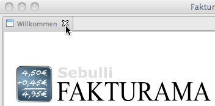Nach der Installation ist ein Demowebshop auf http://fakturama.sebulli.com ausgewählt. Startet man ein Importieren von Webshopdaten so werden 3 Musterprodukte und 2 Musterkunden angelegt. Diese können später wieder gelöscht werden.
Vor dem Arbeiten mit Fakturama sollten noch einige Einstellungen gesetzt werden. Die Werte sind bereits sinnvoll ausgewählt, doch nicht immer passen diese auf den eigenen Arbeitsablauf.
Einige Einstellungen wie Firmendaten oder die Zugangsdaten des Webshops müssen gesetzt werden. Es empfiehlt sich, alle Einstellungen zu prüfen.
Fakturama benutzt zum Drucken von Dokumenten wie Rechnungen oder Lieferscheine OpenOffice Vorlagen. Diese müssen auf das eigenen Design angepasst und mit den Firmendaten versehen werden.
Siehe auch Einstellungen
Siehe auch OpenOffice.org Vorlagen
Die Programmoberfläche ist in verschiedenen Bereiche eingeteilt.
Das Fakturama Arbeitsverzeichnis wird in der Titelleiste angezeigt.
Viele Kommandos können über die Menüleiste aufgerufen werden. Manche sind zusätzlich auch in der Werkzeugleiste oder der Navigationsleiste verfügbar. Einige nur hier.
Siehe Menüleiste
Die Kommandos, die am häufigsten benutzt werden sind zusätzlich in der Werkzeugleiste vorhanden.
Siehe Werkzeugleiste
Die wichtigsten Vorgänge können aus der Navigationsleiste gestartet werden. Übersichtlich mit Icons versehen und in Gruppen sortiert. Das Verhalten der Navigationsleiste kann in den Einstellungen festgelegt werden.
Siehe Navigationsleiste
Jedes Produkt, jeder Kontakt oder jedes Dokument kann einem Editorfenster geöffnet und bearbeitet werden. Gleichzeitig können mehrere Editoren geöffnet sein.
Siehe Editorfenster
Hier wird tabellarisch eine Übersicht aller Produkte, Kontaktadressen oder Dokumente angezeigt. Ein Eintrag kann angewählt und im Editorfenster zum Bearbeiten geöffnet werden.
Siehe Übersichtsfenster
Die Statusleiste kann den Zustand verschiedener Programmabläufe darstellen.
Die Menüleiste ist aus 5 Hauptmenüs aufgebaut.
Beinhaltet alle Befehle zum Schließen, Speichern, Laden und Drucken des Editorinhaltes oder des gesamten Programms.
Siehe Hauptmenü Datei
Befehle zum Anzeigen der verschiedenen Datentabellen.
Siehe Hauptmenü Daten
Befehle zum Erzeugen von neuen Datensätzen und Öffnen in einem Editor Fenster.
Siehe Hauptmenü Neu erzeugen
Befehle Erzeugen oder Anordnen von Fenstern.
Siehe Hauptmenü Fenster
Befehle zum Abrufen von Informationen und zur Softwareaktualisierung.
Siehe Hauptmenü Hilfe
Schließt den zur Zeit aktiven Editor und prüft, ob die Daten gespeichert werden müssen.
Schließt alle zur Zeit geöffneten Editoren und prüft, ob die Daten gespeichert werden müssen.
Speichert das Dokument, Kontaktadresse, Produkt ... des aktiven Editors. Ist das Icon ausgegraut, so ist kein Speichern notwendig oder kein Editor ausgewählt. Zum Auswählen einmal in das Editorfenster klicken.
Speichert den Inhalt aller geöffneten Editoren.
Öffnet das Dokument des aktiven Editors im OpenOffice Writer und benutzt eine Vorlage. Es erscheint ein Auswahlmenü wenn mehr als eine Vorlagen existiert. Ist das Icon ausgegraut, so ist kein Drucken nicht möglich oder kein Editor ausgewählt. Zum Auswählen einmal in das Editorfenster klicken.
Wählt das Arbeitsverzeichnis, in dem Fakturama die Firmendatenbank und alle Dokumente ablegt. Beispiel:
C:\Projekte\MeineFirma\
Siehe auch Arbeitsverzeichnis
Öffnet den Dialog, um verschiedenen Einstellungen zu ändern.
Siehe auch Einstellungen

Stellt eine Verbindung mit dem Webshop her. Eingegangenen Bestellungen werden abgerufen. Neue Produkte werden importiert und Preise aktualisiert. Kontaktadressen werden ebenfalls geladen und zu den Adressdaten hinzugefügt, falls diese noch nicht existieren.
Siehe auch Webshop
Öffnet einen Importdialog, um verschiedenen Daten in Fakturama zu importieren.
Öffnet einen Exportdialog, um verschiedenen Daten aus Fakturama zu exportieren.
Beendet das Programm.
Löscht den aktuellen Datensatz.
Markiert eine Rechnung, eine Gutschrift oder eine Mahnung als "unbezahlt".
Markiert eine Rechnung, eine Gutschrift oder eine Mahnung als "bezahlt". Der Rechnungsbetrag wird als Zahlbetrag übernommen. Das heutige Datum wird als Zahldatum verwendet.
Markiert die ausgewählte Bestellung als "offen".
Markiert die ausgewählte Bestellung als "in Bearbeitung".
Je nach Einstellung wird der Kunde per E-Mail über den neuen Status benachrichtigt.
Siehe Kunde benachrichtigen
Markiert die ausgewählte Bestellung als "versendet".
Je nach Einstellung wird der Kunde per E-Mail über den neuen Status benachrichtigt.
Siehe Kunde benachrichtigen
Öffnet eine Liste mit allen Dokumenten im Übersichtsfenster.
Öffnet eine Liste mit allen Produkten im Übersichtsfenster.
Öffnet eine Liste mit allen Kontaktadressen im Übersichtsfenster.
Öffnet eine Liste mit allen Zahlmethoden im Übersichtsfenster.
Öffnet eine Liste mit allen Versandarten im Übersichtsfenster.
Öffnet eine Liste mit allen Steuersätzen im Übersichtsfenster.
Öffnet eine Liste mit allen vordefinierten Texten im Übersichtsfenster.
Öffnet eine Zusammenfassung aller Listeneinträge im Übersichtsfenster.
Öffnet eine Liste mit allen Ausgabenbelegen im Übersichtsfenster.
Erstellt einen neuen Brief und öffnet diesen in einem Editorfenster.
Erstellt ein neues Angebot und öffnet dieses in einem Editorfenster.
Erstellt eine neue Bestellung und öffnet diese in einem Editorfenster.
Erstellt eine neue Auftragsbestätigung und öffnet diese in einem Editorfenster.
Erstellt eine neue Rechnung und öffnet diese in einem Editorfenster.
Erstellt einen neuen Lieferschein und öffnet diesen in einem Editorfenster.
Erstellt eine neue Gutschrift und öffnet diese in einem Editorfenster.
Erstellt eine neue Mahnung und öffnet diese in einem Editorfenster.
Erstellt ein neues Produkt und öffnet dieses in einem Editorfenster.
Erstellt einen neuen Adresseintrag und öffnet diesen in einem Editorfenster.
Erstellt eine neue Zahlungsmethode und öffnet diese in einem Editorfenster.
Erstellt eine neue Versandart und öffnet diese in einem Editorfenster.
Erstellt einen neuen Steuersatz und öffnet diesen in einem Editorfenster.
Erstellt einen neuen Text und öffnet diesen in einem Editorfenster.
Erstellt einen neuen Listeneintrag und öffnet diesen in einem Editorfenster.
Erstellt einen neuen Ausgabenbeleg und öffnet diesen in einem Editorfenster.
Die Position und Größe der Editorfenster, des Übersichtsfensters und der Navigationsleiste werden gespeichert. Mit Perspektive zurücksetzen wird die ursprüngliche Größe und Position der einzelnen Fenster wieder hergestellt.

Öffnet einen Taschenrechner in einem eigenen Fenster.

Öffnet die Fakturama Projektwebseite in einem Editorfenster.
Öffnet dieses Handbuch entweder in einem eigenen Fenster oder im Webbrowser.
Siehe auch Hilfeinhalte öffnen
Öffnet das Hilfesystem zum Suchen nach einem Begriff. Dieses wird entweder in einem eigenen Fenster oder innerhalb Fakturama geöffnet.
Siehe auch Öffnen der Suche für die Hilfe
Öffnet das Hilfesystem zur dynamischen Hilfe in einem eigenen Fenster innerhalb Fakturama. Bei der dynamischen Hilfe wird auf denjenigen Teil des Programms geklickt, für den ein Hilfetext benötigt wird.
Zeigt das Willkommensfenster (Intro), wie es auch beim erstmaligen von Fakturama präsentiert wurde.
Siehe auch Start von Fakturama
Überprüft, ob für Fakturama eine Programmaktualisierung zur Verfügung steht. Ist das der Fall kann der Benutzer entscheiden, ob diese installiert werden soll.
Fakturama besteht aus vielen einzelnen Modulen, sogenannten PlugIns. Über einen Dialog können weitere PlugIns angewählt und installiert werden.
Öffnet ein Fenster mit Versionsinformationen zu Fakturama und den installierten PlugIns.
Die Werkzeugleiste beinhaltet die Kommandos, die am häufigsten benutzt werden und schnell aufgerufen werden können.
Stellt eine Verbindung mit dem Webshop her. Eingegangenen Bestellungen werden abgerufen. Neue Produkte werden importiert und Preise aktualisiert. Kontaktadressen werden ebenfalls geladen und zu den Adressdaten hinzugefügt, falls diese noch nicht existieren.
Siehe auch Webshop
Öffnet das Dokument des aktiven Editors im OpenOffice Writer und benutzt eine Vorlage. Es erscheint ein Auswahlmenü wenn mehr als eine Vorlagen existiert. Ist das Icon ausgegraut, so ist kein Drucken nicht möglich oder kein Editor ausgewählt. Zum Auswählen einmal in das Editorfenster klicken.
Siehe auch OpenOffice.org
Speichert das Dokument, Kontaktadresse, Produkt ... des aktiven Editors. Ist das Icon ausgegraut, so ist kein Speichern notwendig oder kein Editor ausgewählt. Zum Auswählen einmal in das Editorfenster klicken.
Erstellt einen neuen Brief und öffnet diesen in einem Editorfenster.
Siehe auch Dokumenteneditor
Erstellt ein neues Angebot und öffnet dieses in einem Editorfenster.
Siehe auch Dokumenteneditor
Erstellt eine neue Bestellung und öffnet diese in einem Editorfenster.
Siehe auch Dokumenteneditor
Erstellt eine neue Auftragsbestätigung und öffnet diese in einem Editorfenster.
Siehe auch Dokumenteneditor
Erstellt eine neue Rechnung und öffnet diese in einem Editorfenster.
Siehe auch Dokumenteneditor
Erstellt einen neuen Lieferschein und öffnet diesen in einem Editorfenster.
Siehe auch Dokumenteneditor
Erstellt eine neue Gutschrift und öffnet diese in einem Editorfenster.
Siehe auch Dokumenteneditor
Erstellt eine neue Mahnung und öffnet diese in einem Editorfenster.
Siehe auch Dokumenteneditor
Erstellt ein neues Produkt und öffnet dieses in einem Editorfenster.
Siehe auch Produkteditor
Erstellt einen neuen Adresseintrag und öffnet diesen in einem Editorfenster.
Siehe auch Kontakteditor
Erstellt einen neuen Ausgabenbeleg und öffnet diesen in einem Editorfenster.
Siehe auch Editor Ausgabenbeleg
Öffnet die Fakturama Projektwebseite in einem Editorfenster.
Öffnet einen Taschenrechner in einem eigenen Fenster.
Daten können aus der Navigationsleiste schnell aufgerufen und Aktionen ausgeführt werden.

Die Einträge der Navigationsleiste sind in Gruppen aufgeteilt. Jede Gruppe lässt sich ein- oder ausklappen. Es ist möglich, das Verhalten der Navigationsleiste in den Einstellungen so zu ändern, dass beim Aufklappen einer Gruppe die anderen automatisch eingeklappt werden.
Befehle, um verschiedenen Daten in Fakturama zu importieren.
Siehe Gruppe Importieren

Befehle zum Anzeigen der verschiedenen Datentabellen.
Siehe Gruppe Daten
Befehle zum Erzeugen von neuen Datensätzen und Öffnen in einem Editor Fenster.
Siehe Gruppe Neu erzeugen
Befehle, um verschiedenen Daten aus Fakturama zu exportieren.
Siehe Gruppe Exportieren
Gruppe mit Befehlen, die sich in keine andere Gruppe einsortieren lassen.
Siehe Gruppe Sonstiges
Stellt eine Verbindung mit dem Webshop her. Eingegangenen Bestellungen werden abgerufen. Neue Produkte werden importiert und Preise aktualisiert. Kontaktadressen werden ebenfalls geladen und zu den Adressdaten hinzugefügt, falls diese noch nicht existieren.
Siehe auch Webshop
Öffnet eine Liste mit allen Dokumenten im Übersichtsfenster.
Siehe auch Übersichtsfenster
Öffnet eine Liste mit allen Produkten im Übersichtsfenster.
Siehe auch Übersichtsfenster
Öffnet eine Liste mit allen Kontaktadressen im Übersichtsfenster.
Siehe auch Übersichtsfenster
Öffnet eine Liste mit allen Zahlmethoden im Übersichtsfenster.
Siehe auch Übersichtsfenster
Öffnet eine Liste mit allen Versandarten im Übersichtsfenster.
Siehe auch Übersichtsfenster
Öffnet eine Liste mit allen Steuersätzen im Übersichtsfenster.
Siehe auch Übersichtsfenster
Öffnet eine Liste mit allen vordefinierten Texten im Übersichtsfenster.
Siehe auch Übersichtsfenster
Öffnet eine Zusammenfassung aller Listeneinträge im Übersichtsfenster.
Siehe auch Übersichtsfenster
Öffnet eine Liste mit allen Ausgabenbelegen im Übersichtsfenster.
Siehe auch Übersichtsfenster
Erstellt ein neues Produkt und öffnet dieses in einem Editorfenster.
Siehe auch Produkteditor
Erstellt einen neuen Adresseintrag und öffnet diesen in einem Editorfenster.
Siehe auch Kontakteditor
Exportiert die Umsätze in einer OpenOffice Calc Tabelle
Alle Einnahmen und Ausgaben, die in einem auswählbaren Zeitbereich liegen werden exportiert und zusammengefasst.
Öffnet die Fakturama Projektwebseite in einem Editorfenster.
Öffnet einen Taschenrechner in einem eigenen Fenster.
Im Bereich der Editorfenster können gleichzeitig mehrere Editoren dargestellt werden.
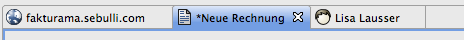Ein Klick auf die Titelleiste jedes Editors öffnet ein Kontextmenü. Darüber ist es möglich, die Größe und Position zu ändern und diesen oder mehrere Editoren gleichzeitig zu schließen.
Wurde der Inhalt eines Datensatzes mit dem Editor geändert, wird dies durch ein zusätzliches * vor dem Namen in der Titelleiste angezeigt. Ein Speichern aktualisiert den den Datensatz.
Der Dokumenteneditor ist für alle Arten von Dokumenten ähnlich. Je nach Art des Dokumentes (Brief, Rechnung ..) sind einige Elemente ausgeblendet.

Dokumentennummer. Diese wird automatisch hochgezählt. Sie kann nachträglich geändert werden. Es erscheint beim Abspeichern eine Warnung, wenn Sie nicht der nächsten freien Nummer entspricht.
Siehe Nummernkreise
Datum des Dokumentes. Bei einer Rechnung beispielsweise das Rechnungsdatum. Ein Ändern beeinflusst das Datum bei "zahlbar in X Tagen bis zum:"
Art dieses Dokumentes incl. Logo. Beispiel: Rechnung, Bestellung, Brief etc.
Referenznummer des Kunden. Bei einem Import aus dem Webshop wird hier die Webshop-Bestellnummer verwendet.
Adresse des Kunden. Bei einem Lieferschein ist dies die Lieferadresse, bei allen anderen Dokumenten die Rechnungsadresse.
Die Adresse kann direkt eingegeben werden. Ebenso kann über das Icon "Kontakt" eine Liste mit allen Kontaktadressen geöffnet und die gewünschte Adresse ausgewählt werden. Dann wird neben dem Adresstext auch eine Verknüpfung mit der Adresse hergestellt. Der Adresstext sollte dann nur noch geringfügig geändert werden.
Siehe auch Format des Adressfeldes

Ist die Lieferadresse unterschiedlich zur Rechnungsadresse, so erscheint ein Warnsymbol. Die Lieferadresse wird beim Überfahren mit der Maus angezeigt.
Datum der Bestellung. Kann zum Beispiel auf die Rechnung gedruckt werden.
Nummer der Rechnung, die diesem Vorgang zugeordnet ist.
Die Mehrwertsteuer lässt sich für das komplette Dokument auf 0% setzen.

Erzeugt aus dem Dokument eines neues. Daten werden dabei soweit wie möglich übernommen.
Tabelle mit allen Artikeln dieses Dokumentes. Alle Spalten, bis auf den (Gesamt-)Preis lassen sich ändern. Ein neuer Artikel kann hinzugefügt werden:

Auswahl des Artikels aus der Liste mit allen Produkten.
Fügt eine neue Zeile mit einem Artikel ein.
Löscht den ausgewählten Artikel.
Feld für eine zusätzliche Bemerkung, die auf Rechnung oder Lieferschein gedruckt wird.
Öffnet eine Liste mit vordefinierten Texten.
Siehe Editor Text
Markierung, ob die Rechnung bezahlt wurde.
Auswahl der Zahlmethode. Je nach Zahlmethode wird auf der Rechnung der entsprechende Text gedruckt.
Siehe Editor Zahlmethode
Anzahl der Tage, innerhalb derer die Rechnung bezahlt werden muss. Beim Ändern wird automatisch das Datum angepasst.
Datum, bis zu dem die Rechnung bezahlt werden muss. Beim Ändern wird automatisch die Anzahl der Tage angepasst.
Tag des Geldeingangs.
Tatsächlicher Geldeingang. Zieht ein Kunde einen Skontobetrag ab, wird dies hier berücksichtigt.
Summe aller Artikel
Rabatt auf alle Artikel
Die Versandkosten lassen sich aus einer Liste auswählen. Es ist auch möglich den Betrag nachträglich von Hand zu ändern. Versandkosten werden als Netto- oder Bruttowert angezeigt.
Siehe Editor Versandart
Anteil der Mehrwertsteuer
Siehe Editor Steuersatz
Gesamtsumme (Brutto) des Dokumentes incl. Mehrwertsteuer.
Siehe auch Einstellungen Dokument
Je nach Einstellungen sind einige Elemente ausgeblendet.

Artikelnummer des Produktes. Diese wird automatisch hochgezählt. Sie kann nachträglich geändert werden. Es erscheint beim Abspeichern eine Warnung, wenn Sie nicht der nächsten freien Nummer entspricht.
Siehe Nummernkreise
Name des Produktes.
Kategorie, in die das Produkt einsortiert wird. Beim Import aus einem Webshop werden hier die Kategorie aus dem Webshop verwendet. Die Verwendung von Unterkategorien ist möglich. Die Bezeichnungen sind dann durch einen Schrägstrich / zu trennen. Beispiel:
Hauptkategorie/Unterkategorie/WeitereUnterkategorie
Kurze Beschreibung des Produktes,
Je nach Einstellung wird der Netto- oder Bruttopreis angezeigt. Beim Editieren des Nettopreises wird automatische der Bruttopreis abgepasst und umgekehrt. Abhängig vom Mehrwertsteuersatz. Die Verwendung von Staffelpreisen wird ebenfalls möglich.
Mehrwertsteuersatz dieses Produktes.
Siehe Editor Steuersatz
Angabe des Gewichtes. Dieser Wert ist nur zur Information.
Wird das Produkt aus einem Webshop importiert, wird automatisch das Produktbild verwendet. Bei manuell angelegten Produkten kann ein Bild ausgewählt werden. In beiden Fällen wird eine Kopie des Bildes im Arbeitsverzeichnis im Ordner Pics/Products angelegt.
Siehe auch Einstellungen Produkt
Je nach Einstellungen sind einige Elemente ausgeblendet.
Nummer des Kontaktes. Diese wird automatisch hochgezählt.
Siehe Nummernkreise
Adresse ist auch Rechnungsadresse. Einzelne Felder wie Geschlecht, Titel, Firma, Land können in den Einstellungen auch ausgeblendet werden, falls diese nie benutzt werden.
Ist dieses Feld aktiviert, so wird als Lieferadresse die Rechnungsadresse verwendet.
Wird ausgeblendet, wenn Lieferadresse entspricht Rechnungsadresse aktiviert wurde.
Kontodaten des Kontaktes. Es ist nicht erforderlich, alle Felder auszufüllen.
Kategorie, in die der Kontakt einsortiert wird. Die Verwendung von Unterkategorien ist möglich. Die Bezeichnungen sind dann durch einen Schrägstrich / zu trennen. Beispiel:
Kunden/Webshop
Kategorie, in die der Kontakt einsortiert wird.
E-Mail, Telefon, Telefax, Mobilnummer, Webseite und USt.IdNr.
Zahlungsmethode des Kunden. Wird beim Anlegen eines neues Dokumentes mit diesem Kunden verwendet.
Angabe über die Bonität (Kreditwürdigkeit) eines Kunden. Dieser Wert ist nur zur Information.
Rabatt der diesem Kunden üblicherweise gewährt wird. Wird beim Anlegen eines neues Dokumentes mit diesem Kunden verwendet.
Zu jedem Kontakt kann eine Notiz hinterlegt werden. Ist dort ein Text vorhanden, so wird dieser bei jedem Aufruf des Texteditors in den Vordergrund gestellt.
Siehe auch Einstellungen Kontakte

Eindeutiger Name der Zahlmethode. Dies ist auch die Kennung, die vom Shopsystem verwendet wird. Der Name sollte dann nicht verändert werden. Anstatt dessen sollte der Text Beschreibung angepasst werden.
Kategorie, in die die Zahlungsmethode einsortiert wird. Die Verwendung von Unterkategorien ist möglich. Die Bezeichnungen sind dann durch einen Schrägstrich / zu trennen. Beispiel:
Hauptkategorie/Unterkategorie/WeitereUnterkategorie
Dieser Text wird auf den Dokumenten verwendet.
Skonto in %, das innerhalb der Frist Tage Skonto abgezogen werden darf.
Innerhalb dieser Zeit ist ein Skontoabzug möglich.
Innerhalb dieser Zeit ist der Rechnungsbetrag ohne Skontoabzug zu bezahlen.
Dieser Text wird auf die Rechnung gedruckt, wenn diese als 'bezahlt' markiert ist.
Dieser Text wird auf die Rechnung gedruckt, wenn diese als 'bezahlt' markiert ist.
Bei beiden Texten ist es möglich, folgende Platzhalter zu verwenden:
Zeigt den Namen derjenigen Zahlmethode, die momentan die Standardzahlmethode ist.
Macht diese Zahlmethode zur Standardzahlmethode.
Eindeutiger Name der Versandart. Dies ist auch die Kennung, die vom Shopsystem verwendet wird. Der Name sollte dann nicht verändert werden. Anstatt dessen sollte der Text Beschreibung angepasst werden.
Kategorie, in die die Versandart einsortiert wird. Die Verwendung von Unterkategorien ist möglich. Die Bezeichnungen sind dann durch einen Schrägstrich / zu trennen. Beispiel:
Hauptkategorie/Unterkategorie/WeitereUnterkategorie
Dieser Text wird auf den Dokumenten verwendet.
Wert der Versandkosten. Netto oder Brutto. Welcher Wert dargestellt wird hängt von den Einstellungen und der Art der MwSt. Berechnung ab.
Siehe Einstellungen Produkt
Mehrwertsteuersatz, falls bei MwSt. Berechnung die Einstellung konstante MwSt. gewählt wurde.
Neben einem konstanten Mehrwertsteuersatz auf die Versandkosten ist es auch möglich, die Mehrwertsteuer abhängig von der Steuer der Produkte zu berechnen.
Beispiel: Werden Bücher mit 7% bestellt, so werden auch auf die Versandkosten 7% berechnet. Bei einer Mischbestellung mit Artikeln zu 7% und 19% wird die Mehrwertsteuer der Versandkosten anteilig berechnet. Der effektive Mehrwertsteuersatz liegt dann zwischen 7% und 19%.
Zeigt den Namen derjenigen Versandart, die momentan die Standardversandart ist.
Macht diese Versandart zur Standardversandart.
Eindeutiger Name des Steuersatzes. Dies ist auch die Kennung, die vom Shopsystem verwendet wird. Der Name sollte dann nicht verändert werden. Anstatt dessen sollte der Text Beschreibung angepasst werden.
Kategorie, in die der Steuersatz einsortiert wird. Die Verwendung von Unterkategorien ist möglich. Die Bezeichnungen sind dann durch einen Schrägstrich / zu trennen. Beispiel:
Hauptkategorie/Unterkategorie/WeitereUnterkategorie
Dieser Text wird auf den Dokumenten verwendet.
Prozentualer Wert des Steuersatzes.
Zeigt den Namen desjenigen Steuersatzes, der momentan der Standardsteuersatz ist.
Macht diese Steuersatzes zum Standardsteuersatz.
Es ist möglich standardisierte Texte abzulegen, die mit einem Klick verwendet werden können. Zum Beispiel im Dokumenteneditor.
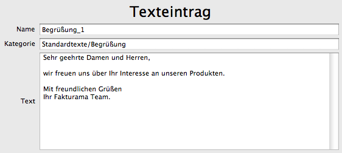Eindeutiger Name des Textes.
Kategorie, in die der Text einsortiert wird. Die Verwendung von Unterkategorien ist möglich. Die Bezeichnungen sind dann durch einen Schrägstrich / zu trennen. Beispiel:
Hauptkategorie/Unterkategorie/WeitereUnterkategorie
Der eigentliche Text.
Es ist möglich standardisierte Texte abzulegen, die mit einem Klick verwendet werden können. Zum Beispiel im Dokumenteneditor.
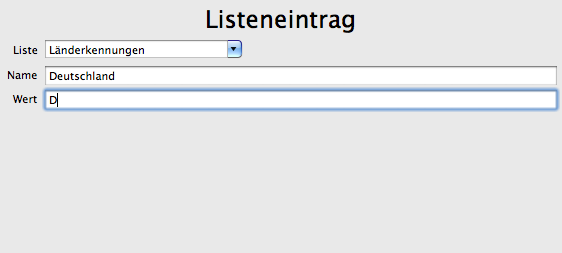Liste, in die der Listeneintrag einsortiert wird.
Eindeutiger Name des Listeneintrages.
Wert (Text) des Listeneintrages.
Alle Ausgaben können in Ausgabenbelegen erfasst und später tabellarisch und sortiert als OpenOffice Calc Tabelle exportiert werden.
Viele Felder des Ausgabenbeleges sind mit einer Autovervollständigung ausgestattet. Diese wird automatisch für das Feld abgeschaltet, sobald einmal der Wert korrigiert wurde.
Kategorie des Beleges. Zum Beispiel Bank, Kreditkarte, privat verauslagt. Eine neue Kategorie wird automatisch angelegt, wenn der Kategoriename in die Auswahlliste eingetragen wird.
Datum des Beleges. Das Datum, an dem die Zahlung durchgeführt wurde.
Eigene Nummerierung der Belege.
Nummer des Beleges, z.B. die Rechnungsnummer.
Name des Lieferanten
Tabelle mit allen Positionen dieses Beleges. Der Mehrwertsteuersatz wird automatisch ausgewählt. Die Zuordnung Kontenart und Mehrwertsteuersatz wird gelernt und in die Liste Kontennummern eingetragen. Sie lässt sich nachträglich mit dem Editor Listeneintrag ändern
Fügt eine neue Zeile für eine neuen Position ein.
Löscht die ausgewählte Zeile/Position.
Wird dann angewählt, wenn der gezahlte Betrag nicht mit dem berechneten Gesamtbetrag übereinstimmt.
Der Betrag, der tatsächlich bezahlt wurde.
Aus den einzelnen Positionen berechneter Gesamtbetrag.
Das Übersichtsfenster stellt alle Datensätze tabellarisch dar.
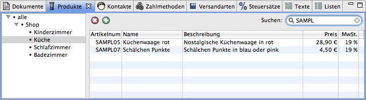Alle Datensätze können in eine Kategorie eingeordnet werden. Am linken Rand des Übersichtsfenster erscheint ein Baum mit allen verwendeten Kategorien. Wird das Element alle ausgewählt, werden alle Datensätze angezeigt. Ist ein Kategorieelement angewählt, erscheinen nur diejenigen Datensätze, die in die gleiche Kategorie eingeordnet wurden.
Der Kategoriebaum für Dokumente unterscheidet sich etwas von dem für andere Datensätze. Dokumente werden je nach Art des Dokumentes automatisch in Kategorien sortiert.
Vorgang. Wird dieses Element ausgewählt, werden diejenigen Dokumente angezeigt, die dem gleichen Vorgang zugeordnet werden können.
Name des Kontaktes. Wird dieses Element ausgewählt, werden diejenigen Dokumente angezeigt, die dem gleichen Kontakt (Kunde/Lieferant) zugeordnet werden können.
Über diesen Knopf oder über das Kontextmenü (rechte Maustaste) oder mit der Taste Entf kann der ausgewählte Datensatz gelöscht werden.
Über diesen Knopf oder über das Kontextmenü (rechte Maustaste) kann ein neuer Datensatz hinzugefügt werden.
Die Menge der angezeigten Datensätzen lässt sich einschränken. Wird in das Suchfeld eine Zeichenkette eingetragen, so werden nur diejenigen Datensätze angezeigt, die diese beinhalten. Je nach Art des Datensatzes werden unterschiedliche Spalten zur Suche verwendet. Die Spalte Name wird immer verwendet.
Ist das Suchfeld leer, werden alle angezeigt.
Die Datensätze sind tabellarisch dargestellt.
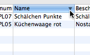Durch Klicken auf die Kopfzeile der Tabelle lassen sich die Datensätze aufsteigend oder absteigend sortieren.
Die Tabelle für Dokumente enthält eine Spalte Status.
Rechnungen werden als bezahlt oder unbezahlt markiert.
Bestellungen werden als offen, in Bearbeitung oder versendet markiert.
Über das Kontextmenü (rechte Maustaste) kann der Status einer Bestellung geändert werden. Je nach Einstellung wird der Kunde per E-Mail über den neuen Status benachrichtigt.
Siehe Kunde benachrichtigen
Fakturama benutzt OpenOffice.org Writer, um Dokumente wie Rechnungen und Lieferscheine zu drucken und Berichte als OpenOffice.org Calc Tabelle zu exportieren.
Für die Dokumente werden OpenOffice.org Vorlagen mit Firmenlogo, Adresse usw. angelegt, die dann mit dem eigentlichen Dokumenteninhalt befüllt werden.
OpenOffice.org ist eine freie Bürosoftware. Das Projekt ist Open-Source und steht in zahlreichen Sprachen und für verschiedenen Betriebssysteme zur Verfügung.
Link zur deutschsprachigen Seite des OpenOffice.org Projektes: de.openoffice.org
Link zum Downloadbereich: OpenOffice.org Download
Siehe auch OpenOffice.org Einstellungen
Vorlagen für Dokumente wie Rechnungen, Lieferscheine usw. werden im Arbeitsverzeichnis im Ordner Vorlagen und dort im entsprechenden Unterordner abgelegt.
Beim Drucken eines Dokumentes wird die entsprechende Vorlage verwendet. Existiert mehr als eine Vorlage, so wird ein Auswahlmenü eingeblendet.
Vorlagen müssen im OpenOffice.org Vorlagenformat *.ott vorliegen. Der Dateiname kann ansonsten beliebig gewählt werden, sollte jedoch kurz und aussagekräftig sein, da er bei mehr als einer Vorlage auch im Auswahlmenü erscheint.
Siehe auch Arbeitsverzeichnis
Eine Vorlage kann aus Texten, Grafiken und Tabellen bestehen. Über verschiedenen Platzhalter füllt Fakturama die Vorlage mit dem entsprechenden Inhalt.

Unterschiedliche Platzhalter sind für unterschiedliche Bereiche vorgesehene:
Ein Platzhalter wird in OpenOffice.org Writer eingefügt über das Menü Einfügen/Feldbefehl/Andere oder die Tastenkombination Strg.+F2. Im Dialog im Reiter Funktionen als Feldtyp Platzhalter auswählen und als Format den Eintrag Text. Der Platzhalter wird in Großbuchstaben ohne die spitzen Klammern im Feld Platzhalter eingegeben.
Die bearbeitete Vorlage muss im entsprechenden Ordner über das Menü Datei/Speichern unter .. als ODF Textdokumentvorlage *.ott abgespeichert werden.
Siehe auch Arbeitsverzeichnis
Platzhalter, die an jeder Stelle in der Vorlage stehen dürfen.
Datum des Dokumentes. Zum Beispiel Rechnungsdatum bei einer Rechnung.
(Rechnungs-)Adresse
Lieferadresse
Art des Dokumentes. Zum Beispiel: Rechnung, Lieferschein
Dokumentennummer
Kundenreferenz
Leistungsdatum (wird zur Zeit nicht benutzt).
Text der Nachricht
Eindeutiger Transaktionscode des Vorganges. Ist für Bestellung, Rechnung, Lieferschein identisch.
Rechnungsnummer zu diesem Vorgang.
Bestellnummer aus dem Webshop.
Bestelldatum aus dem Webshop.
Bestelldatum.
Zwischensumme der Artikel (brutto).
Zwischensumme der Artikel (netto).
Mehrwertsteuer.
Gesamtsumme incl. Versandkosten, Rabatt, Steuer (brutto)
Versandkosten (netto).
Versandkosten (netto).
Versandkosten Mehrwertsteuer.
Versandkosten (brutto).
Name Versandkosten/Versandart. Auf den Dokumenten sollte SHIPPING.DESCRIPTION, da der Name die Identifikation mit der Bezeichnung aus dem Webshop darstellt und nicht geändert werden sollte.
Bezeichnung Versandkosten/Versandart.
Bezeichnung Steuer der Versandkosten/Versandart.
Text der Zahlmethode. Abhängig davon, ob bezahlt wurde wird der Text für bezahlt oder unbezahlt verwendet.
Name der Zahlmethode. Auf den Dokumenten sollte PAYMENT.DESCRIPTION, da der Name die Identifikation mit der Bezeichnung aus dem Webshop darstellt und nicht geändert werden sollte.
Bezeichnung Zahlmethode.
Bezahlter Betrag.
Datum der Einzahlung.
Tage, innerhalb derer die Rechnung beglichen werden muss.
Datum, bis zu dem die Rechnung beglichen werden muss.
true oder false - abhängig davon, ob bezahlt wurde oder nicht.
Adresse des Kontaktes (Rechnungsadresse).
Geschlecht (Rechnungsadresse).
Anrede (Rechnungsadresse).
Siehe auch Format Grußformel
Titel (Rechnungsadresse).
Vorname (Rechnungsadresse).
Nachname (Rechnungsadresse).
Vor- und Nachname (Rechnungsadresse).
Firmenbezeichnung (Rechnungsadresse).
Straße incl. Hausnummer (Rechnungsadresse).
Postleitzahl (Rechnungsadresse).
Stadt (Rechnungsadresse).
Land (Rechnungsadresse).
Adresse des Kontaktes (Lieferadresse).
Geschlecht (Lieferadresse).
Anrede (Lieferadresse).
Siehe auch Format Grußformel
Titel (Lieferadresse).
Vorname (Lieferadresse).
Nachname (Lieferadresse).
Vor- und Nachname (Lieferadresse).
Firmenbezeichnung (Lieferadresse).
Straße incl. Hausnummer (Lieferadresse).
Postleitzahl (Lieferadresse).
Stadt (Lieferadresse).
Land (Lieferadresse).
Kontoinhaber.
Kontonummer.
Bankleitzahl.
Name der Bank.
IBAN.
BIC.
Kundennummer
Rufnummer.
Faxnummer.
Mobilnummer.
E-Mail Adresse.
Mobilnummer.
Webseite.
USt-IdNr.
Text der Notiz über diesen Kunden/Lieferanten. Vorsicht bei der Benutzung. Dieser Text sollte nicht immer auf einem Dokument erscheinen.
Rabatt der diesem Kunden üblicherweise gewährt wird.
Platzhalter der Artikeltabelle stehen exemplarisch für die erste Zeile einer Tabelle. Je nach Anzahl der Artikel wird diese Tabellenzeile vervielfacht. Einer der beiden Platzhalter ITEM.NAME oder ITEM.DESCRIPTION ist mindestens erforderlich.

Artikelanzahl.
Artikelname.
Artikelnummer.
Beschreibung des Artikels.
Steuersatz des Artikels (in %).
Name des Steuersatzes des Artikels.
Bezeichnung des Steuersatzes des Artikels.
Einzelpreis (netto).
Steueranteil eines Artikels.
Einzelpreis (brutto).
Einzelpreis unter Berücksichtigung eines Rabattes (netto).
Steueranteil unter Berücksichtigung eines Rabattes eines Artikels.
Einzelpreis unter Berücksichtigung eines Rabattes (brutto).
Gesamtpreis unter Berücksichtigung eines Rabattes (netto).
Gesamter Steueranteil unter Berücksichtigung eines Rabattes.
Gesamtpreis unter Berücksichtigung eines Rabattes (brutto).
Die Platzhalter für die Zwischensumme der Artikel, für Versandkosten und die Gesamtsumme sind allgemeine Platzhalter.
Siehe auch Allgemeine Platzhalter
Die Platzhalter für Rabatt und die Anteile der Mehrwertsteuer haben eine erweiterte Funktionalität und müssen in ein zweispaltigen Tabelle gesetzt werden.
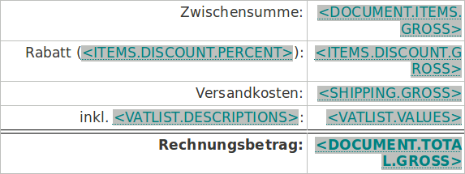Rabatt auf alle Artikel (% Wert).
Rabatt auf alle Artikel (netto).
Rabatt auf alle Artikel (brutto).
Diese drei Platzhalter für Rabatt auf alle Artikel haben die Besonderheit, dass für den Fall kein Rabatt (0%), die komplette Zeile der Tabelle gelöscht wird.
Liste mit allen Steuersätzen (Beschreibung).
Liste mit allen Steuersätzen (Werte).
Diese zwei Platzhalter für Liste mit allen Steuersätzen haben die Besonderheit, dass für jeden weiteren Steuersatz eine neue Zeile der Tabelle angelegt wird.
Fakturama kann Bestellungen aus einem Webshop importieren und daraus Rechnung und Lieferschein erstellen. Ebenso können Adressdaten und Produkte mit Produktbild importiert werden.
Die Verbindung zwischen einem Webshop und Fakturama wird durch eine Webshop Schnittstelle hergestellt. Zur Zeit stehen Schnittstellen für 3 verschiedene, kostenlose Shopsysteme zur Verfügung.
Folgende Shopsysteme werden unterstützt:
osCommerce ist ein Open-Source Shopsystem. Es ist kostenlos und bietet sehr viele Erweiterungen, um den Shop auf die eigenen Bedürfnisse anzupassen. Neben der englischen gibt es auch eine deutschsprachige Seite.
xt:Commerce 3 zählt laut Hersteller zu den führenden Shopsoftware Lösungen. xt:Commerce 3 basiert auf osCommerce und beinhaltet bereits viele Erweiterungen.
xtcModified ist eine verbesserte Version von xt:Commerce 3.04 SP2.1. Es sind viele Fehlerkorrekturen und Verbesserungen eingeflossen. xtcModified ist ebenfalls kostenlos. Ein deutschsprachiges Forum bietet Hilfe rund um dieses Shopsystem.
Damit Fakturama Bestellungen aus dem Webshop abrufen kann ist es notwendig, die Schnittstelle zu Fakturama auf dem Server des Shopsystems zu installieren.
Im Downloadbereich auf der Fakturama Projektseite finden sich Schnittstellen zu unterschiedlichen Shopsystemen. Entpacken Sie das entsprechende ZIP Archiv auf Ihrem Rechner. Im entpackten Ordner müssen sich folgende zwei Dateien befinden:

Die Datei INSTALLATION.TXT beschreibt die Installation. Die Dateien fakturama_connector.php muss auf den Webserver in den Ordner:
/admin
kopiert werden.
Siehe auch Einstellungen / Import aus Webshop
Alle Daten die Fakturama benutzt werden in werden in einem Arbeitsverzeichnis abgelegt.
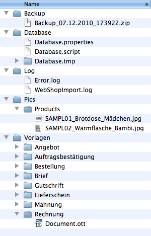Bei jedem Start von Fakturama wird die Datenbank komprimiert und mit Zeitstempel versehen in diesem Ordner abgelegt. Es ist damit möglich, die Datenbank zu einem Stand wieder zurückzusetzen. Produktbilder werden nicht gesichert.
Fakturama speichert alle Daten (bis auf die Produktbilder) in einer HSQLDB 2.0 Datenbank. Diese Datenbank besteht aus den beiden Dateien Database.properties, welche Einstellungen der Datenbank speichert und Database.script mit den eigentlichen Daten.
Ist Fakturama geöffnet, werden bis zum Schließen zusätzlich noch die Dateien Database.lck und Database.log erzeugt. Den Order Database.tmp benutzt die Datenbank, um kurzzeitig Daten zwischenzuspeichern.
Fehler während dem Programmablauf werden in der Datei Error.log festgehalten. WebShopImport.log ist die Antwort des Webshops bei Abfragen von Daten.
Fakturama speichert keine Bilder in der Datenbank. Diese werden im Ordner Pics abgelegt. Für eine vollständige Sicherung müssen diese mit der Datenbank gesichert werden.
Siehe auch Produktbild
In diesem Ordner befinden sich die Vorlagen für alle Dokumente im OpenOffice Format. Damit eine Vorlage benutzt werden kann, muss diese nur in dem entsprechenden Ordner im *.ott Format abgelegt werden. Bei zwei oder mehreren Vorlagen kann der Benutzer kurz vor dem Drucken die entsprechende Vorlage auswählen.
Siehe auch OpenOffice.org Vorlagen
Viele Einstellungen in Fakturama können geändert werden. Der Dialog lässt sich bei einem Windows oder Linux System im Menü Datei/Einstellungen und bei OS X im Menü Fakturama/Einstellungen öffnen.

In der linken Navigationsleiste werden beim Ausklappen einer Expandbar die anderen Expandbars automatisch eingeklappt. ist diese Option nicht ausgewählt, bleiben die anderen unbeeinflusst.
Legt das Währungssymbol für alle Preisangaben fest. Ein Wechsel des Währungssymbols ändert nicht den Wert.
Es ist möglich, nur ein Symbol wie '€' zu verwenden, aber auch 'EUR' oder 'EURO '
Legt fest, ob die Preise in der Artikelliste der Dokumente (Rechnungen, Lieferscheine ..) als Netto oder Brutto angezeigt werden
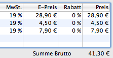Wir ein Dokument dupliziert, wird zum Beispiel aus einer Bestellung eine Rechnung erzeugt, so werden Adresse und Artikel übernommen. Es ist möglich, den Kommentartext ebenfalls zu übernehmen, oder beim duplizierten Dokument leer zu lassen.
Der Kommentar einer Bestellung ist derjenige, den der Kunde bei seiner Bestellung im Webshop eingegeben hat. Es ist nicht immer sinnvoll, diesen Text auch auf die Rechnung weiter zu geben. Der Text dort ist vielmals eine Information an den Kunden.
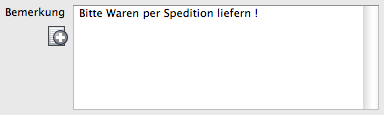In den Dokumenten kann ein neuer Artikel über den Produktauswahl-Dialog eingefügt werden. Diese Einstellung legt fest, ob die Produktbeschreibung mit übernommen wird. Oftmals ist die Produktbeschreibung ein längerer Text und nicht geeignet für die Artikelliste eines Dokumentes. Ist diese Option nicht ausgewählt bleibt das Feld 'Beschreibung' der Artikelliste leer und kann mit zusätzlicher Information wie 'Farbe: rot' versehen werden.

Siehe auch Dokumenteneditor
Beim Export der Umsätze in einer Tabelle wird ein Zeitabschnitt, zum Beispiel ein Monat oder ein Quartal angegeben. Es werden nur diejenigen Rechnungen und Ausgabenbelege exportiert, deren Datum in diesem Zeitabschnitt liegen. Hier kann festgelegt werden, ob dabei das Zahldatum oder das Rechnungsdatum berücksichtigt wird.
Bei einer Istversteuerung wird hier üblicherweise das Zahldatum gewählt. Bei einer Sollversteuerung das Rechnungsdatum.
Legt fest, ob die eine zusätzliche Spalte mit der Summe der Ausgaben angezeigt wird.

Spalten mit 0% MwSt. enthalten grundsätzlich immer den Wert 0,00€. Diese können ausgeblendet werden, um die Übersichtlichkeit zu erhöhen.
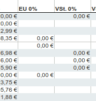Die Adresse wird benutzt, um beispielsweise beim Exportieren der Umsätze in einer Tabelle diese mit den Firmendaten zu füllen.
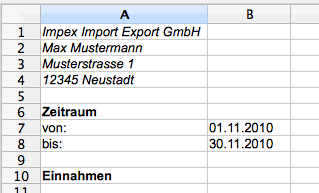Legt fest, ob bei Hilfe/Suchen ein Fenster innerhalb Fakturama oder ein extra Fenster geöffnet wird.
Legt fest, ob bei Hilfe/Handbuch ein extra Fenster oder der Webbrowser geöffnet wird.
Legt fest, ob die Kontexthilfe (STRG+F1) bei einem Fenster in einem Fakturama-Fenster oder in einem extra Popup-Fenster angezeigt wird.
Legt fest, ob die Kontexthilfe (STRG+F1) bei einem Dialog im erweiterten Dialog oder in einem extra Popup-Fenster angezeigt wird.
Es ist nicht nur möglich, das lokale Hilfesystem auf dem Rechner zu benutzen, auch kann eine Online-Hilfe eingebunden werden. Je nach Einstellung wird die lokale Hilfe oder die Online-Hilfe bevorzugt.
Legt das Erscheinungsbild des Kontakteditors fest. Einige Felder können ausgeblendet werden, um die Übersichtlichkeit zu erhöhen.
Falls die Rechnungsadresse und Lieferadresse bei jedem Vorgang übereinstimmen kann das Feld 'Lieferadresse' ausgeblendet werden.

Die Seite 'Bankkonto' kann eingeblendet werden, falls die Bankverbindung der Kunden hinterlegt werden soll.

Die Seite 'Sonstiges' kann eingeblendet werden, falls zusätzliche Informationen hinterlegt werden sollen.

Die Seite 'Notiz' kann eingeblendet werden, falls zusätzliche Notizen hinterlegt werden sollen. Ist eine Notiz hinterlegt, wird die Seite beim Aufruf einer Adresse im Vordergrund angezeigt.

Siehe auch Kontakteditor
Definiert den Text der Grußformel und den Aufbau des Adressfeldes bei allen Dokumenten.
Folgende Platzhalter können verwendet werden:
Siehe auch Adresse Dokumenteneditor
Format der Grußformel, die dann benutzt wird, wenn dem Kontakteintrag kein Geschlecht zugewiesen wurde.
Beispiel:
Sehr geehrte Damen und Herren der Firma {company}
wird auf einer Rechnung ersetzt zu:
Sehr geehrte Damen und Herren der Firma Impex Import Export GmbH
Siehe auch Anrede (Rechnungsadresse)
Siehe auch Anrede (Lieferadresse)
Format der Grußformel, die dann benutzt wird, wenn es sich bei dem Kontakt um einen Mann handelt.
Beispiel:
Sehr geehrter Herr {lastname}
wird auf einer Rechnung ersetzt zu:
Sehr geehrter Herr Müller
Siehe auch Anrede (Rechnungsadresse)
Siehe auch Anrede (Lieferadresse)
Format der Grußformel, die dann benutzt wird, wenn es sich bei dem Kontakt um eine Frau handelt.
Beispiel:
Sehr geehrte Frau {lastname}
wird auf einer Rechnung ersetzt zu:
Sehr geehrte Frau Müller
Siehe auch Anrede (Rechnungsadresse)
Siehe auch Anrede (Lieferadresse)
Format der Grußformel, die dann benutzt wird, wenn es sich bei dem Kontakt um eine Firma handelt.
Beispiel:
Sehr geehrte Damen und Herren der Firma {company}
wird auf einer Rechnung ersetzt zu:
Sehr geehrte Damen und Herren der Firma Impex Import Export GmbH
Siehe auch Anrede (Rechnungsadresse)
Siehe auch Anrede (Lieferadresse)
Beim Anlegen eines neuen Kunden, eines Produktes oder eines Dokumentes wird automatisch die Kunden-, Artikel- oder Dokumentennummer hochgezählt.
Auf dieser Seite wird angezeigt, wie die nächste Nummer lautet, die vergeben wird. Ebenso kann diese geändert werden, falls die Zählreihenfolge nicht mehr stimmt oder geändert werden soll.

Für folgende Daten werden automatisch Nummern vergeben:
Beim Anlegen eines neuen Kunden, eines Produktes oder eines Dokumentes wird automatisch die Kunden-, Artikel- oder Dokumentennummer hochgezählt.
Für Kunden, Produkte und jede Art von Dokument kann ein unterschiedliches Format vorgegeben werden.
Als Platzhalter für die Nummer dient die Zeichensequenz: {Xnr}
Das X ist durch die Anzahl der Stellen zu ersetzen.
Die Zahl wird mit Nullen aufgefüllt, bis die Anzahl der Stellen erreicht ist.
Beispiel:
RE{5nr}
erzeugt bei einer Rechnungsnummer '200' eine formatierte Rechnungsnummer von:
RE00200
Für folgende Daten kann das Format vorgegeben werden:
Fakturama benutzt OpenOffice, um Dokumente und Tabellen zu exportieren.
Je nach Betriebssystem wird hier der Ordner ausgewählt, in dem sich die OpenOffice Installation befindet, oder die OpenOffice App. In der Klammer steht der Standard Pfad. Wurde OpenOffice an einer anderen Stelle installiert, ist diese auszuwählen.
Standardpfad für Windows Betriebssysteme
C:\Program Files\OpenOffice.org 3
Standardpfad für Linux Betriebssysteme
/usr/lib/openoffice
Standardapp für MAC OS X Betriebssysteme
/Applications/OpenOffice.org.app
Beim Exportieren/Drucken eines Dokumentes wird dieses automatisch im Ordner Dokumente im Arbeitsverzeichnis gespeichert. Entweder als OpenOffice.org ODT Dokument, als PDF oder beides.

Siehe auch OpenOffice.org
Legt das Erscheinungsbild des Produkteditors fest. Einige Felder könne ausgeblendet werden, um die Übersichtlichkeit zu erhöhen.
Falls keine Artikelnummern vergeben werden, die Produkte nur über den Namen identifiziert werden, kann das Feld 'Artikelnummer' ausgeblendet werden.

Falls zum Produkt neben dem Namen keine weitere Beschreibung notwendig ist, kann das Feld 'Beschreibung' ausgeblendet werden.
Es ist möglich, den Preis sowohl als Nett, als auch als Bruttowert darstellen zu lassen.
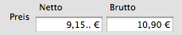Hier kann angegeben werden, ob Staffelpreise benutzt werden sollen. Wenn ja, wie viele Preisstaffelungen benutzt werden sollen.
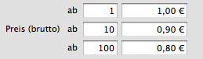Falls die Produkte immer mit dem gleichen, dem Standardsteuersatz ausgezeichnet werden, kann das Feld 'Mehrwertsteuer' ausgeblendet werden.

Falls die Produkte ohne Gewichtsangabe angelegt werden, kann das Feld 'Gewicht' ausgeblendet werden.
Falls die Produkte ohne Produktbild angelegt werden, kann das Feld 'Produktbild' ausgeblendet werden.

Siehe auch Produkteditor
Vollständige URL des Importskriptes des Webshops (ohne http://).
Beispiel:
www.deinshop.de/admin/fakturama_connector.php
Die Datei fakturama_connector.php muss auf dem Webserver zur Verfügung stehen. Siehe dazu Kapitel 'Installation'.
Benutzername (z.B. E-Mail) des Shop-Administrators.
Passwort des Shop-Administrators.
Kategorie, in die alle importierten Produkte aus dem Webshop abgelegt werden. Ist keine Kategorie angegeben, wird die Kategorie aus dem Webshop übernommen.
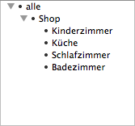Kategorie, in die alle importierten Kunden aus dem Webshop abgelegt werden.
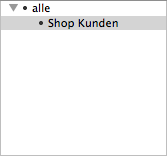Kategorie, in die alle importierten Versandarten aus dem Webshop abgelegt werden.
Wird der Status einer Bestellung auf 'in Bearbeitung' gesetzt, so kann der Kunde darüber per E-Mail benachrichtigt werden. Der Status im Webshop wird ebenfalls aktualisiert.
Wird der Status einer Bestellung auf 'versendet' gesetzt, so kann der Kunde darüber per E-Mail benachrichtigt werden. Der Status im Webshop wird ebenfalls aktualisiert.
Siehe auch Die Schnittstelle zum Webshop
Fakturama ist ein freies Open-Source Programm.
Die Software selbst steht unter der Eclipse Public License v 1.0
Alle Grafiken, die Hilfetexte und das Handbuch stehen unter der Creative Commons Attribution-NonCommercial-NoDerivs 3.0 Unported Lizenz
Die Software Fakturama steht unter der Eclipse Public License v 1.0.
THE ACCOMPANYING PROGRAM IS PROVIDED UNDER THE TERMS OF THIS ECLIPSE PUBLIC LICENSE ("AGREEMENT"). ANY USE, REPRODUCTION OR DISTRIBUTION OF THE PROGRAM CONSTITUTES RECIPIENT'S ACCEPTANCE OF THIS AGREEMENT.
1. DEFINITIONS
"Contribution" means:
a) in the case of the initial Contributor, the initial code and documentation distributed under this Agreement, and
b) in the case of each subsequent Contributor:
i) changes to the Program, and
ii) additions to the Program;
where such changes and/or additions to the Program originate from and are distributed by that particular Contributor. A Contribution 'originates' from a Contributor if it was added to the Program by such Contributor itself or anyone acting on such Contributor's behalf. Contributions do not include additions to the Program which: (i) are separate modules of software distributed in conjunction with the Program under their own license agreement, and (ii) are not derivative works of the Program.
"Contributor" means any person or entity that distributes the Program.
"Licensed Patents" mean patent claims licensable by a Contributor which are necessarily infringed by the use or sale of its Contribution alone or when combined with the Program.
"Program" means the Contributions distributed in accordance with this Agreement.
"Recipient" means anyone who receives the Program under this Agreement, including all Contributors.
2. GRANT OF RIGHTS
a) Subject to the terms of this Agreement, each Contributor hereby grants Recipient a non-exclusive, worldwide, royalty-free copyright license to reproduce, prepare derivative works of, publicly display, publicly perform, distribute and sublicense the Contribution of such Contributor, if any, and such derivative works, in source code and object code form.
b) Subject to the terms of this Agreement, each Contributor hereby grants Recipient a non-exclusive, worldwide, royalty-free patent license under Licensed Patents to make, use, sell, offer to sell, import and otherwise transfer the Contribution of such Contributor, if any, in source code and object code form. This patent license shall apply to the combination of the Contribution and the Program if, at the time the Contribution is added by the Contributor, such addition of the Contribution causes such combination to be covered by the Licensed Patents. The patent license shall not apply to any other combinations which include the Contribution. No hardware per se is licensed hereunder.
c) Recipient understands that although each Contributor grants the licenses to its Contributions set forth herein, no assurances are provided by any Contributor that the Program does not infringe the patent or other intellectual property rights of any other entity. Each Contributor disclaims any liability to Recipient for claims brought by any other entity based on infringement of intellectual property rights or otherwise. As a condition to exercising the rights and licenses granted hereunder, each Recipient hereby assumes sole responsibility to secure any other intellectual property rights needed, if any. For example, if a third party patent license is required to allow Recipient to distribute the Program, it is Recipient's responsibility to acquire that license before distributing the Program.
d) Each Contributor represents that to its knowledge it has sufficient copyright rights in its Contribution, if any, to grant the copyright license set forth in this Agreement.
3. REQUIREMENTS
A Contributor may choose to distribute the Program in object code form under its own license agreement, provided that:
a) it complies with the terms and conditions of this Agreement; and
b) its license agreement:
i) effectively disclaims on behalf of all Contributors all warranties and conditions, express and implied, including warranties or conditions of title and non-infringement, and implied warranties or conditions of merchantability and fitness for a particular purpose;
ii) effectively excludes on behalf of all Contributors all liability for damages, including direct, indirect, special, incidental and consequential damages, such as lost profits;
iii) states that any provisions which differ from this Agreement are offered by that Contributor alone and not by any other party; and
iv) states that source code for the Program is available from such Contributor, and informs licensees how to obtain it in a reasonable manner on or through a medium customarily used for software exchange.
When the Program is made available in source code form:
a) it must be made available under this Agreement; and
b) a copy of this Agreement must be included with each copy of the Program.
Contributors may not remove or alter any copyright notices contained within the Program.
Each Contributor must identify itself as the originator of its Contribution, if any, in a manner that reasonably allows subsequent Recipients to identify the originator of the Contribution.
4. COMMERCIAL DISTRIBUTION
Commercial distributors of software may accept certain responsibilities with respect to end users, business partners and the like. While this license is intended to facilitate the commercial use of the Program, the Contributor who includes the Program in a commercial product offering should do so in a manner which does not create potential liability for other Contributors. Therefore, if a Contributor includes the Program in a commercial product offering, such Contributor ("Commercial Contributor") hereby agrees to defend and indemnify every other Contributor ("Indemnified Contributor") against any losses, damages and costs (collectively "Losses") arising from claims, lawsuits and other legal actions brought by a third party against the Indemnified Contributor to the extent caused by the acts or omissions of such Commercial Contributor in connection with its distribution of the Program in a commercial product offering. The obligations in this section do not apply to any claims or Losses relating to any actual or alleged intellectual property infringement. In order to qualify, an Indemnified Contributor must: a) promptly notify the Commercial Contributor in writing of such claim, and b) allow the Commercial Contributor to control, and cooperate with the Commercial Contributor in, the defense and any related settlement negotiations. The Indemnified Contributor may participate in any such claim at its own expense.
For example, a Contributor might include the Program in a commercial product offering, Product X. That Contributor is then a Commercial Contributor. If that Commercial Contributor then makes performance claims, or offers warranties related to Product X, those performance claims and warranties are such Commercial Contributor's responsibility alone. Under this section, the Commercial Contributor would have to defend claims against the other Contributors related to those performance claims and warranties, and if a court requires any other Contributor to pay any damages as a result, the Commercial Contributor must pay those damages.
5. NO WARRANTY
EXCEPT AS EXPRESSLY SET FORTH IN THIS AGREEMENT, THE PROGRAM IS PROVIDED ON AN "AS IS" BASIS, WITHOUT WARRANTIES OR CONDITIONS OF ANY KIND, EITHER EXPRESS OR IMPLIED INCLUDING, WITHOUT LIMITATION, ANY WARRANTIES OR CONDITIONS OF TITLE, NON-INFRINGEMENT, MERCHANTABILITY OR FITNESS FOR A PARTICULAR PURPOSE. Each Recipient is solely responsible for determining the appropriateness of using and distributing the Program and assumes all risks associated with its exercise of rights under this Agreement , including but not limited to the risks and costs of program errors, compliance with applicable laws, damage to or loss of data, programs or equipment, and unavailability or interruption of operations.
6. DISCLAIMER OF LIABILITY
EXCEPT AS EXPRESSLY SET FORTH IN THIS AGREEMENT, NEITHER RECIPIENT NOR ANY CONTRIBUTORS SHALL HAVE ANY LIABILITY FOR ANY DIRECT, INDIRECT, INCIDENTAL, SPECIAL, EXEMPLARY, OR CONSEQUENTIAL DAMAGES (INCLUDING WITHOUT LIMITATION LOST PROFITS), HOWEVER CAUSED AND ON ANY THEORY OF LIABILITY, WHETHER IN CONTRACT, STRICT LIABILITY, OR TORT (INCLUDING NEGLIGENCE OR OTHERWISE) ARISING IN ANY WAY OUT OF THE USE OR DISTRIBUTION OF THE PROGRAM OR THE EXERCISE OF ANY RIGHTS GRANTED HEREUNDER, EVEN IF ADVISED OF THE POSSIBILITY OF SUCH DAMAGES.
7. GENERAL
If any provision of this Agreement is invalid or unenforceable under applicable law, it shall not affect the validity or enforceability of the remainder of the terms of this Agreement, and without further action by the parties hereto, such provision shall be reformed to the minimum extent necessary to make such provision valid and enforceable.
If Recipient institutes patent litigation against any entity (including a cross-claim or counterclaim in a lawsuit) alleging that the Program itself (excluding combinations of the Program with other software or hardware) infringes such Recipient's patent(s), then such Recipient's rights granted under Section 2(b) shall terminate as of the date such litigation is filed.
All Recipient's rights under this Agreement shall terminate if it fails to comply with any of the material terms or conditions of this Agreement and does not cure such failure in a reasonable period of time after becoming aware of such noncompliance. If all Recipient's rights under this Agreement terminate, Recipient agrees to cease use and distribution of the Program as soon as reasonably practicable. However, Recipient's obligations under this Agreement and any licenses granted by Recipient relating to the Program shall continue and survive.
Everyone is permitted to copy and distribute copies of this Agreement, but in order to avoid inconsistency the Agreement is copyrighted and may only be modified in the following manner. The Agreement Steward reserves the right to publish new versions (including revisions) of this Agreement from time to time. No one other than the Agreement Steward has the right to modify this Agreement. The Eclipse Foundation is the initial Agreement Steward. The Eclipse Foundation may assign the responsibility to serve as the Agreement Steward to a suitable separate entity. Each new version of the Agreement will be given a distinguishing version number. The Program (including Contributions) may always be distributed subject to the version of the Agreement under which it was received. In addition, after a new version of the Agreement is published, Contributor may elect to distribute the Program (including its Contributions) under the new version. Except as expressly stated in Sections 2(a) and 2(b) above, Recipient receives no rights or licenses to the intellectual property of any Contributor under this Agreement, whether expressly, by implication, estoppel or otherwise. All rights in the Program not expressly granted under this Agreement are reserved.
This Agreement is governed by the laws of the State of New York and the intellectual property laws of the United States of America. No party to this Agreement will bring a legal action under this Agreement more than one year after the cause of action arose. Each party waives its rights to a jury trial in any resulting litigation.
Die im Fakturama Projekt benutzen Grafiken, die Hilfetexte und das Handbuch stehen unter der Creative Commons Attribution-NonCommercial-NoDerivs 3.0 Unported Lizenz.

das Werk bzw. den Inhalt vervielfältigen, verbreiten und öffentlich zugänglich machen

Namensnennung — Sie müssen den Namen des Autors/Rechteinhabers in der von ihm festgelegten Weise nennen.

Keine kommerzielle Nutzung — Dieses Werk bzw. dieser Inhalt darf nicht für kommerzielle Zwecke verwendet werden.

Keine Bearbeitung — Dieses Werk bzw. dieser Inhalt darf nicht bearbeitet, abgewandelt oder in anderer Weise verändert werden.
Verzichtserklärung — Jede der vorgenannten Bedingungen kann aufgehoben werden, sofern Sie die ausdrückliche Einwilligung des Rechteinhabers dazu erhalten.
Public Domain (gemeinfreie oder nicht-schützbare Inhalte) — Soweit das Werk, der Inhalt oder irgendein Teil davon zur Public Domain der jeweiligen Rechtsordnung gehört, wird dieser Status von der Lizenz in keiner Weise berührt.
Sonstige Rechte — Die Lizenz hat keinerlei Einfluss auf die folgenden Rechte:
Hinweis — Im Falle einer Verbreitung müssen Sie anderen alle Lizenzbedingungen mitteilen, die für dieses Werk gelten.
Diese "Commons Deed" ist lediglich eine vereinfachte Zusammenfassung des rechtsverbindlichen Lizenzvertrages in allgemeinverständlicher Sprache.
Alle verwendeten Markennamen und Bezeichnungen sind eingetragene Warenzeichen und Marken der jeweiligen Eigentümer.
Windows und Windows Vista sind eingetragene Warenzeichen der Microsoft, Inc., USA.
Mac OS X ist ein eingetragenes Warenzeichen der Apple, Inc., USA.
Java™ und alle Java-basierten Zeichen sind Markenzeichen oder eingetragene Markenzeichen der Oracle Corporation und/oder ihrer Tochtergesellschaften in den U.S.A. oder in anderen Ländern.
OpenOffice.org und das OpenOffice.org Logo sind eingetragene Markenzeichen der Oracle Corporation und/oder ihrer Tochtergesellschaften in den U.S.A. oder in anderen Ländern.
SUSE LINUX ist eine eingetragene Marke von Novell, Inc. in den USA und anderen Ländern.
Red Hat ist eine eingetragene Marke von Red Hat, Inc. in den USA und anderen Ländern.
Linux ist eine eingetragene Marke von Linus Torvalds.
Fedora ist ein Markenzeichen von Red Hat, Inc.
Ubuntu ist ein eingetragenes Markenzeichen von Canonical Ltd.